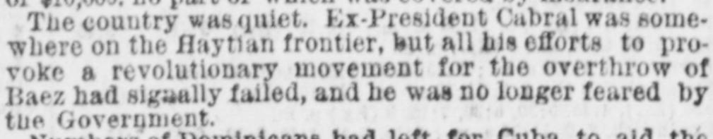
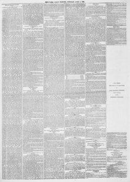

See the full pageVer la página completaEx-President Cabral was some- where on the Haytian frontier, but allEl expresidente Cabral se encontraba en algún punto de la frontera haitiana, pero todos
The New-York Tribune reported on conditions in Santo Domingo, noting strong popular sentiment in favor of annexation to the United States, favorable reports on mineral wealth by State Geologist Professor Gabb, and a record tobacco crop. The paper also reported that many Dominicans were departing to assist Cuban insurgents against Spain. While initial reports claimed former President Cabral's rebellion had failed, subsequent dispatches indicated Cabral had defeated government forces in several southern towns, prompting President Báez to concentrate his troops at Azua.El New-York Tribune informó sobre la situación en Santo Domingo, destacando una marcada corriente popular favorable a la anexión a los Estados Unidos, informes elogiosos sobre los yacimientos minerales rendidos por el geólogo del Estado, el profesor Gabb, y una cosecha tabacalera sin precedentes. El diario también dio cuenta de que numerosos dominicanos partían para socorrer a los insurrectos cubanos frente a España. Aunque las primeras noticias aseguraban el fracaso de la revuelta del expresidente Cabral, partes posteriores indicaron que Cabral había batido a las tropas del gobierno en varias poblaciones del sur, lo que constriñó al presidente Báez a reconcentrar sus contingentes en Azua.
FULL TEXT:TRADUCCIÓN:
THE FIRE AT PUERTO PLATA—INCORRECT NEWS BY THE HAVANA CABLE—THE COUNTRY QUIET—DOMINICAN VOLUNTEERS FOR THE CUBAN ARMY—STRONG FEELING IN FAVOR OF ANNEXATION TO THE UNITED STATES.EL INCENDIO EN PUERTO PLATA—NOTICIAS INCORRECTAS POR EL CABLE DE LA HABANA—EL PAÍS TRANQUILO—VOLUNTARIOS DOMINICANOS PARA EL EJÉRCITO CUBANO—FUERTE SENTIMIENTO EN FAVOR DE LA ANEXIÓN A LOS ESTADOS UNIDOS.
By the arrival at this port yesterday of the schooner Charles Albert, from Puerto Plata, in 10 days, we have advices from Santo Domingo to the 27th ultimo.Por la llegada a este puerto ayer de la goleta Charles Albert, procedente de Puerto Plata, en 10 días, tenemos noticias de Santo Domingo hasta el 27 del pasado.
The news received here from Havana by Cable, and published last Sunday, of a great fire having occurred at Puerto Plata, burning down the Custom-House at that place and many other buildings, whereby several of the merchants had been ruined, is totally incorrect. A fire did take place on the 26th May in the town, but only one building was destroyed by it, and beyond a scorching of the walls of the Custom-House from the flames of the burning building, that edifice sustained no damage. The sufferers from the fire are foreign merchants, Messrs. Hamburger and Meyer, and they are losers to the extent of $10,000, no part of which was covered by insurance.La noticia recibida aquí desde La Habana por cable, y publicada el domingo pasado, de que había ocurrido un gran incendio en Puerto Plata, quemándose la Aduana de ese lugar y muchos otros edificios, por lo cual varios de los comerciantes habían quedado arruinados, es totalmente incorrecta. En efecto ocurrió un incendio el 26 de mayo en el pueblo, pero solo un edificio fue destruido por él, y aparte de una chamuscadura de las paredes de la Aduana por las llamas del edificio incendiado, ese edificio no sufrió daño alguno. Los perjudicados por el incendio son comerciantes extranjeros, los Sres. Hamburger y Meyer, y son perdedores por la cantidad de $10,000, ninguna parte de la cual estaba cubierta por seguro.
The country was quiet. Ex-President Cabral was somewhere on the Haytian frontier, but all his efforts to provoke a revolutionary movement for the overthrow of Baez had signally failed, and he was no longer feared by the Government.El país estaba tranquilo. El ex Presidente Cabral estaba en algún lugar de la frontera haitiana, pero todos sus esfuerzos por provocar un movimiento revolucionario para el derrocamiento de Báez habían fracasado señaladamente, y ya no era temido por el Gobierno.
Numbers of Dominicans had left for Cuba to aid the insurgents in their struggle for independence, and many more were preparing to leave to join the patriot ranks. The Dominicans have not forgotten Spain's attempt to subjugate and enslave them six years ago, and the Cubans may expect to find them warm friends and sturdy allies.Numerosos dominicanos habían partido hacia Cuba para ayudar a los insurgentes en su lucha por la independencia, y muchos más se preparaban para partir y unirse a las filas patriotas. Los dominicanos no han olvidado el intento de España de subyugarlos y esclavizarlos hace seis años, y los cubanos pueden esperar encontrar en ellos amigos calurosos y aliados robustos.
The desire for annexation to the United States was stronger than ever, and regret is very generally expressed that the American Congress should have delayed action in the matter. The people were all looking hopefully to the time when the Stars and Stripes will be floating over the island.El deseo de anexión a los Estados Unidos era más fuerte que nunca, y se expresa muy generalmente el pesar de que el Congreso estadounidense haya demorado la acción en el asunto. Todo el pueblo miraba esperanzado hacia el momento en que la bandera de las barras y estrellas esté ondeando sobre la isla.
Prof. Gabb, the State Geologist, had left for New-York, after having made an extensive survey of the copper regions, and the gold yielding districts. His report was looked for with much anxiety.El profesor Gabb, el Geólogo del Estado, había partido hacia Nueva York, después de haber hecho un extenso estudio de las regiones cupríferas, y de los distritos productores de oro. Su informe era esperado con mucha ansiedad.
The crop of tobacco this year was the largest that has ever been gathered in Santo Domingo, and a brisk time in business was anticipated.La cosecha de tabaco de este año fue la más grande que jamás se haya recogido en Santo Domingo, y se anticipaba una época animada en los negocios.
New-York Tribune. New York, June 8, 1869.
See the original at the Library of CongressVer el original en la Biblioteca del Congreso
Published by: New York Tribune, 1866-1924.Publicado por: New York Tribune, 1866-1924.
Edition: Edition 1Edición: edición 1
Page: 5Página: 5
Frequency: daily (1866–1924)Frecuencia: diario (1866–1924)
Collection: Chronicling America, Library of CongressColección: Chronicling America, de la Biblioteca del Congreso
LCCN: sn83030214LCCN: sn83030214
ISSN: 1941-0646ISSN: 1941-0646
OCLC: 9405688OCLC: 9405688
Rights: public domain, according to the Library of CongressDerechos: dominio público, según la Biblioteca del Congreso